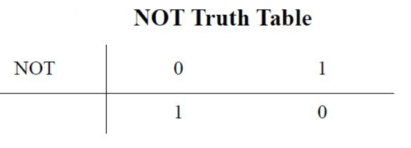
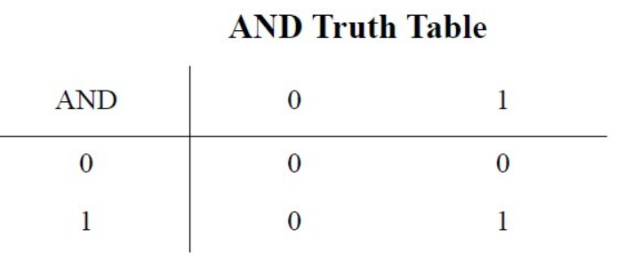
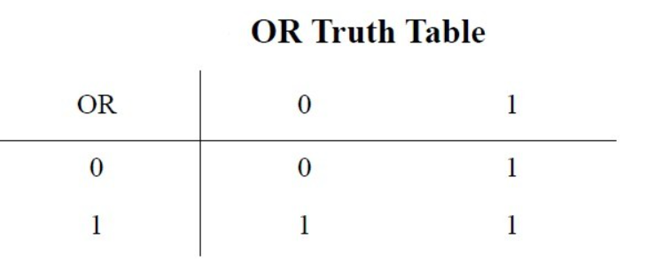
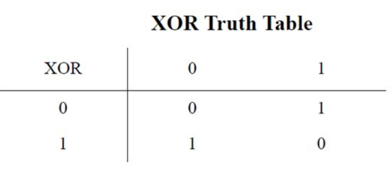
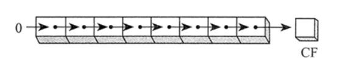
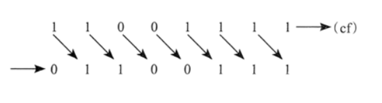
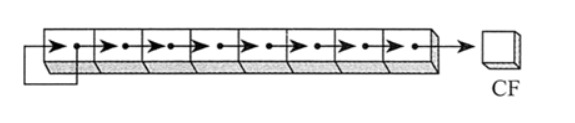
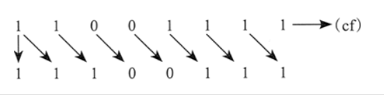

# 前言
之前学的，因为一些事情就耽搁了，转而学其他的了，现在有时间了，打算接着学。
# 内存格式
- 每个内存单元宽度为 8
- 【0x 编号】称为内存地址
- 内存是存储数据的，内存地址是对存储数据的一个标识，指向数据却不是数据，通过内存地址的指引，可以访问到内存当中指向的数据.
内存最小的单位是一个字节 ==>> 8 个二进制数 ==>> 两位的十六进制数
一个内存单元能存一个两位的十六进制数，而这就是内存数据
# 简单指令 (intel 汇编语法)
# mov
格式： mov destination, source
mov eax, ebx // 将 EBX 中的内容复制到 EAX 寄存器中mov eax, 0x42 // 将立即数 0x42 复制到 EAX 寄存器中mov eax, [0x443212C4] // 将内存地址 0x443212C4 的四个字节复制到 EAX 寄存器mov eax, [ebx+esi*4] // 将 ebx+esi*4 等式结果只想的内存地址处 4 个字节复制至 EAX
# lea
格式： lea destination, source
lea 指令用来将一个内存地址赋给目的操作数。
例如， lea eax, [ebx+8] 就是将 EBX+8 的值给 EAX。
相反的， mov eax, [ebx+8] 则加载内存中地址为 EBX+8 处的数据。
# 加减运算：sub add inc dec
例子
| 指令 | 描述 |
| sub eax,0x10 | EAX 寄存器值减去 0x10 |
| add eax,ebx | 将 EBX 值加入 EAX 并将结果保存至 EAX |
| inc edx | EDX 值递增 1 |
| dec ecx | ECX 值递减 1 |
# 乘除运算:mul div
乘法和除法都使用了一个预先规定的寄存器。因此其运算就是指令码加上寄存器要去乘除的值。mul 和 div 指令要操作的寄存器一般会在之前许多条指令的地方被赋值，因此你可能需要在程序的上下文中来寻找。mul value 指令总是将 eax 乘上 value 。因此， EAX 寄存器必须在乘法指令出现前就赋值好。
乘法的结果以 64 位的形式分开存储在两个寄存器中： EDX 和 EAX 。其中 EDX 存储了高的 32 位，EAX 存储低的 32 位。
32 位模式下，MUL（无符号数乘法）指令有三种类型：
第一种执行 8 位操作数与 AL 寄存器的乘法；
第二种执行 16 位操作数与 AX 寄存器的乘法；
第三种执行 32 位操作数与 EAX 寄存器的乘法。
乘数和被乘数的大小必须保持一致，乘积的大小则是它们的一倍。这三种类型都可以使用寄存器和内存操作数，但不能使用立即数：
MUL reg/mem8
MUL reg/meml6
MUL reg/mem32
MUL 指令中的单操作数是乘数。下表按照乘数的大小，列出了默认的被乘数和乘积。由于目的操作数是被乘数和乘数大小的两倍，因此不会发生溢岀。
| 被乘数 | 乘数 | 乘积 |
| AL | reg/mem8 | AX |
| AX | reg/mem16 | DX:AX |
| EAX | reg/mem32 | EDX:EAX |
如果乘积的高半部分不为零，则 MUL 会把进位标志位和溢出标志位置 1。因为进位标志位常常用于无符号数的算术运算，在此我们也主要说明这种情况。例如，当 AX 乘以一个 16 位操作数时，乘积存放在 DX 和 AX 寄存器对中。其中，乘积的高 16 位存放在 DX，低 16 位存放在 AX。如果 DX 不等于零，则进位标志位置 1，这就意味着隐含的目的操作数的低半部分容纳不了整个乘积。
有个很好的理由要求在执行 MUL 后检查进位标志位，即，确认忽略乘积的高半部分是否安全。
32 位模式下，DIV（无符号除法）指令执行 8 位、16 位和 32 位无符号数除法。其中，单寄存器或内存操作数是除数。格式如下：
DIV reg/mem8
DIV reg/meml6
DIV reg/mem32
下表给出了被除数、除数、商和余数之间的关系：
| 被除数 | 除数 | 商 | 余数 |
| AX | reg/mem8 | AL | AH |
| DX:AX | reg/mem16 | AX | DX |
| EDX:EAX | reg/mem32 | EAX | EDX |
64 位模式下，DIV 指令用 RDX:RAX 作被除数，用 64 位寄存器和内存操作数作除数，商存放到 RAX，余数存放在 RDX 中。
# 否操作指令 NOT
NOT OPRD
把 OPRD 取反，再回送给 OPRD
对标志位没有影响

# 与操作指令 AND [与]
AND OPRD1，OPRD2
OPRD1 和 OPRD2 执行与操作，结果送到 OPRD1
执行后，CF＝OF＝0，标志 PF，ZF，SF 反映运算结果，AF 未定义
某个操作数自身与，值不变，可使进位标志 CF＝0

例子
mov al, 00001111band al, 11110101b
最后 al 的结果就是 00000101b
- 或操作指令 OR [或]
OR OPRD1 OPRD2
标志位同与运算指令
某个操作数自身或，值不变，可使进位标志 CF＝0

# 异或操作指令 XOR [异或]
XOR OPRD1 OPRD2
标志位同与运算指令
某个操作数自身异或，值不变，可使进位标志 CF＝0
与 0 异或，不变，与 1 异或，取反。

# 测试指令 TEST
指令格式：TEST R/M,R/M/IMM
TEST OPRD1 OPRD2
指令与 AND 类似，但结果不回送
指令执行后，ZF，PF，SF 反映运算结果，CF＝OF＝0
该指令在一定程序上和 CMP 指令时类似的，两个数值进行与操作，结果不保存，但是会改变相应标志位.
与的操作表项如下：
1 and 1 = 1
1 and 0 = 0
0 and 1 = 0
0 and 0 = 0
常见用法：用这个指令，可以确定某寄存器是否等于 0。
TEST EAX,EAX 观察 Z 位
但是如果 EAX 的二进制某些位为 1 的话，那么运算的结果就不为零。
# CMP 指令
指令格式：CMP R/M,R/M/IMM
该指令是比较两个操作数，实际上，它相当于 SUB 指令，但是相减的结构并不保存到第一个操作数中。
只是根据相减的结果来改变零标志位的，当两个操作数相等的时候，零标志位置 1。
# 移位指令
移位指令分为算术移位和逻辑移位。
移动操作数的位有两种方法。第一种是逻辑移位 (logic shift)，空出来的位用 0 填充。如下图所示，一个字节的数据向右移动一位。也就是说，每一位都被移动到其旁边的低位上。注意，位 7 被填充为 0：

下图所示为二进制数 1100 1111 逻辑右移一位，得到 0110 0111。最低位移入进位标志位：

另一种移位的方法是算术移位 (arithmetic shift)，空出来的位用原数据的符号位填充：

例如，二进制数 1100 1111，符号位为 1。算术右移一位后，得到 1110 0111：

逻辑移位: SHL 、 SHR
算术移位: CAL 、 CAR
无符号数的乘法和除法可以用逻辑移位；
有符号数的乘法和除法可以用算术移位；
# 逻辑移位指令
SHL（左移）指令使目的操作数逻辑左移一位，最低位用 0 填充。最高位移入进位标志位，而进位标志位中原来的数值被丢弃
SHR（右移）指令使目的操作数逻辑右移一位，最高位用 0 填充。最低位复制到进位标志位，而进位标志位中原来的数值被丢弃
SHL/SHR 的第一个操作数是目的操作数，第二个操作数是移位次数：
SHL/SHR destination,count
该指令可用的操作数类型如下所示：
SHL/SHR reg, imm8
SHL/SHR mem, imm8
SHL/SHR reg, CL
SHL/SHR mem, CL
x86 处理器允许 imm8 为 0〜255 中的任何整数。另外，CL 寄存器包含的是移位计数。上述格式同样适用于 SHR、SAL、SAR、ROR、ROL、RCR 和 RCL 指令。
# 算术移位指令
算数移位指令分为：算数左移 SAL (Shift Algebraic Left) 和算数右移 SAR (Shift Algebraic Right);
指令格式: SAL/SAR reg/mem,CL/imm
受影响的标志位：CF,OF,PF,SF,ZF; 对 AF 的影响无定义；
# 循环移位指令
循环移位指令 ror 和 rol 与移位指令类似，但移出的那一位会被填到另一端空出来的位置上，即右循环指令（ror）会将最低位循环一到最高位；左循环移位（rol）则相反。
# NOP 指令
nop 指令什么也不做。当它出现时，直接执行下一条指令。
nop 指令实际上是 xchg eax,eax 的一个谓名字
# push 指令
# pop 指令
# movsb、movsw、movsd 指令
MOVSB、MOVSW 和 MOVSD 指令：将数据到 EDI 指向的内存
# rep 指令
按计数寄存器 ecx 中指定的次数重复执行字符串指令
rep movsd
取 esi 的值 到 edi 指向的地址
# pause 指令
提高自旋等待循环的性能。当执行 “自旋 - 等待循环” 时，Pentium 4 或 Intel Xeon 处理器在退出循环时会遭受严重的性能损失，因为它检测到可能的内存顺序冲突。PAUSE 指令向处理器提示代码序列是一个自旋 - 等待循环。在大多数情况下，处理器使用这个提示来避免内存顺序冲突，这大大提高了处理器性能。因此，建议在所有自旋 - 等待循环中放置 PAUSE 指令。
PAUSE 指令的另一个功能是降低 Pentium 4 处理器在执行旋转循环时的功耗。Pentium 4 处理器可以非常快地执行一个自旋 - 等待循环，导致处理器在等待其所旋转的资源变得可用时消耗大量电力。在自旋 - 等待循环中插入暂停指令可以大大降低处理器的功耗。
这个指令被引入到奔腾 4 处理器中，但它向后兼容所有的 IA-32 处理器。在早期的 IA-32 处理器中，PAUSE 指令就像 NOP 指令一样工作。奔腾 4 和英特尔 Xeon 处理器将 PAUSE 指令实现为预定义延迟。延迟是有限的，对于某些处理器可以是零。该指令不会改变处理器的体系结构状态 (也就是说，它实际上执行了一个延迟的无操作操作)。
该指令的操作在非 64 位模式和 64 位模式下是相同的。
# LOCK 指令
在伴随指令执行期间断言处理器的 LOCK# 信号 (将指令转换为原子指令)。
在多处理器环境中，LOCK# 信号确保处理器在断言信号时独占任何共享内存。
注意，在后来的 Intel 64 和 IA-32 处理器 (包括 Pentium 4, Intel Xeon 和 P6 系列处理器) 中，锁可能会在没有 LOCK# 信号的情况下发生。
LOCK 前缀只能放在以下指令的前面，并且只能放在目的操作数为内存操作数的指令的前面：ADD、ADC、AND、BTC、BTR、BTS、CMPXCHG、CMPXCH8B、DEC、INC、NEG、NOT、OR、SBB、SUB、XOR、XADD 和 XCHG。
如果 LOCK 前缀与这些指令中的一个一起使用，并且源操作数是内存操作数，则可能会生成一个未定义的操作码异常 (#UD)。
如果 LOCK 前缀与任何不在上面列表中的指令一起使用，也会生成一个未定义的操作码异常。
XCHG 指令总是对 LOCK# 信号进行断言，而不管 LOCK 前缀是否存在。
LOCK 前缀通常与 BTS 指令一起使用，在共享内存环境中的内存位置上执行 read-modifywrite 操作。
LOCK 前缀的完整性不受内存字段对齐的影响。
内存锁定在任意错位的字段中被观察到。
该指令的操作在非 64 位模式和 64 位模式下是相同的
# Protected Mode Exceptions
#UD
如果 LOCK 前缀与以下未列出的指令一起使用: ADD,ADC, AND, BTC, BTR, BTS, CMPXCHG, CMPXCH8B, DEC, INC,NEG, NOT, OR, SBB, SUB, XOR, XADD, XCHG，就会产生异常。
其他异常可以由该指令在应用 LOCK 前缀时生成。
# xadd 指令
将第一个操作数 (目标操作数) 与第二个操作数 (源操作数) 交换，然后将两个值的和加载到目标操作数中。
目标操作数可以是寄存器或内存位置； 源操作数是一个寄存器。
在 64 位模式下，指令的默认操作大小是 32 位。
以 REX 的形式使用 REX 前缀。R 允许访问附加寄存器 (R8-R15)。以 REX 的形式使用 REX 前缀。W 将操作提升到 64 位。有关编码数据和限制，请参阅本节开头的汇总图。
该指令可以与 LOCK 前缀一起使用，以允许该指令以原子方式执行。
# bts 指令
例子： lock bts dword ptr [esi], 0 ;
BTS 指令的作用：
两件事:
一、
取 esi 比特位的第 0 位存在 CF 标志位中。
二、lock bts dword ptr [esi],0
将 dword ptr [esi] 指向的内存地址的第 0 位置 1
该指令可以与 LOCK 前缀一起使用，以允许该指令以原子方式执行。
# cmpxchg8b 指令
CMPXCHG8B m64
比较 EDX:EAX 中的 64 位值 (或 RDX:RAX 中的 128 位值，如果操作数是 128 位) 和操作数 (目的操作数)。
如果两个值相等，则目标操作数中存储 ECX:EBX 中的 64 位值 (或 RCX:RBX 中的 128 位值)。
否则，目标操作数中的值被加载到 EDX:EAX (或 RDX:RAX) 中。
目标操作数是一个 8 字节内存位置 (如果操作数大小为 128 位，则为 16 字节内存位置)。
对于 EDX:EAX 和 ECX:EBX 寄存器对，EDX 和 ECX 包含高阶 32 位，EAX 和 EBX 包含 64 位值的低阶 32 位。
对于 RDX:RAX 和 RCX:RBX 寄存器对，RDX 和 RCX 为高 64 位，RAX 和 RBX 为 128 位的低 64 位。
该指令可以与 LOCK 前缀一起使用，以允许该指令以原子方式执行。
# Operation
IF (64-Bit Mode and OperandSize = 64)
THEN
TEMP128 ← DEST
IF (RDX:RAX = TEMP128)
THEN
ZF ← 1;
DEST ← RCX:RBX;
ELSE
ZF ← 0;
RDX:RAX ← TEMP128;
DEST ← TEMP128;
FI;
FI
ELSE
TEMP64 ← DEST;
IF (EDX:EAX = TEMP64)
THEN
ZF ← 1;
DEST ← ECX:EBX;
ELSE
ZF ← 0;
EDX:EAX ← TEMP64;
DEST ← TEMP64;
FI;
FI;
FI;
# Renference
Intel 白皮书第二卷
https://blog.csdn.net/qq_41627235/article/details/80368254
https://wenku.baidu.com/view/518d3e85df36a32d7375a417866fb84ae45cc386.html
https://blog.csdn.net/chuhejiao1516/article/details/100875105
http://c.biancheng.net/view/3589.html